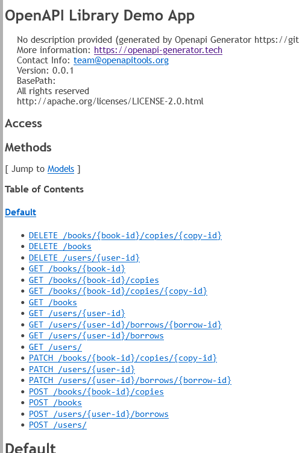

The Openapi Generator for Go API and Go web app development works surprisingly well, but somehow I found that it’s not so often mentioned. Recently I’ve tried it in one of my projects, and in my (limited) experience with it, I was pleasantly surprised by how good it was. With some setup, it could generate Go code with decent quality, and it’s fairly easy to use once you get a hang of it. Whether you’re building a standalone web-app from scratch or creating a service with REST API endpoints, openapi-generator might come up handy for you.
Using a generator might save much time to kick-start your web app project. And most importantly, I found that a good, well-defined, consistent API definition is so crucial to your development, testing, and most importantly, communication among teams and customers. I highly recommend that for any sizable project, you spend some quality time on writing a good API spec. It’ll become essential to your development workflow. I used to highly doubt this, and now I don’t think I can live without it.
And if you manually keep documentation, or API specifictions in sync with your Go code, you’ll have a hard time reviewing, checking,
and testing between code and specs. The best way IMHO is to automate the process, by either generating the API code from spec, or the other around.
Many toolings support either one of these, and openapi-generator is one of the really nice tools that I’m going to introduce in this blog post.
Openapi Generator supports many languages on the server as well as on the client side.
And it has generator for different frameworks of Go. Right here I’m going to use go-server generator
as an example.
It uses the Gorilla framework for the server-side code.
For this blog post I’ve also made an example of code generation in my Github repo. I’ve generated the code,
and implemented only one endpoint /books with example data:
https://github.com/hxy9243/go-examples/tree/main/src/openapi
OpenAPI Definition
OpenAPI format (previously named Swagger) is a way of documenting your REST API endpoints, yet it goes way before simply documentation. You can use it to generate pretty HTML documentation, use for interactive debugging or automatic testing, and in this case, code generation.
See openAPI official documentations and tutorials: https://swagger.io/specification/.
To create a new openAPI definition, you can start with a YAML or JSON file for the data, starting with metadata information for your APIs, including title, version, etc.
An example openAPI 3.0 API definition may look like this:
1 | openapi: 3.0.0 |
The most important field is paths, where you define the endpoints of different paths for your API, along with request parameters, and response data models.
For example, the following path defines the /users endpoint, with “status 200 response” format being an array of “User” data model, which is defined in a separate file user.yaml under components/schemas/users. OpenAPI allows referencing other files, which makes dividing and organizing specifications a lot easier.
1 | /users/: |
And the example user.yaml file contains the specification about the format of the user:
1 | components: |
And you can fill in all the other endpoints, methods, and data models to define the complete API for your application.
Visual Studio Code has extensions to help you better write, lint, and format your openAPI spec, e.g.: https://marketplace.visualstudio.com/items?itemName=42Crunch.vscode-openapi.
Also see official openAPI webpage https://spec.openapis.org/oas/latest.html# for the full specification to learn the very details, including but not limited data types, security, model formats, etc.
Server Code Generation
How to create a project bootstrap with openapi generator
With a correctly defined openAPI specification, you can now generate server code with openapi-generator.
Example command to generate Go code:
1 | openapi-generator-cli generate \ |
The code will be in output directory server, and the source code folder would be server/openapi.
Generated Go code will contain the following files:
api_default_service.go: the default service implementation, where all endpoints will return anUnimplementederror. The service defined here might be the most important data struct. It is the one you’ll need to extend to fill in your own implementation.api_default.go: the default API routing and controller that wraps around the service implementation mentioned above.api.go: defines the router and servicer interface.error.go,helpers.go,impl.go,logger.go: the helper files for errors definition, response, logging, etc.model_*.go: data model struct definition, from your model definitions. e.g. themodel_user.gofile generated from the above example, withUserGo struct.
Voila! Now that you’ve generated the service code as a library, all you need to do is to start filling in your own implementation, and then start your own HTTP server in Go.
Implementation
After the code is generated, you can create your own library to implement the service by extending the DefaultApiService.
Your endpoints will turn into function endpoints like this, with parameters (if exists) in function parameter list, and returns response and error and return.
1 | // GETUsers - |
Although you can start editing away in the generated file (like suggested in the generated code), my personal favorite way to do inherit and override the functions with your own.
You can import the generated openapi library to your own implementation, and inherit it with your own service with the exact function signature:
1 | import "github.com/xxx/xxx/server/gen/openapi" |
The data model defined will be generated as structs in Go. For example, the user example we had will be generated as following, with correct data type mapping:
1 | type User struct { |
The type “string” will be formatted to Go string, and Birthdate with type “string” and format “date-time” will be turned into Go’s time.Time.
You can see more details at: https://openapi-generator.tech/docs/generators/go-server/ about supported types for this generator.
After that, you can start running your own HTTP server by passing the Router as generated HTTP handler, with the default controller and router from openapi library generated code:
1 | service := NewMyWebAppService() |
Overriding the default controller can also gives you more flexibility in your code if necessary, e.g. adding your own logging, tracing, or other middlewares.
Documentation
The generator tool can also generate HTML pages, for your users, customers, or other teammates. e.g.:
1 | doc: api/*.yaml |
It’ll give you a well-rendered HTML project that documents all your API endpoints:

One other documentation tool I found really handy for openAPIs is the redoc tool. They can generate a very pretty HTML page for your API specifications.
Redoc-cli: https://redocly.com/docs/redoc/deployment/cli/
Gotchas
There are also some gotchas I bumped into while researching and using the openapi-generator:
-
You can reuse definition with openAPI reference symbol
$refand divide your definitions into different files, which saves much repetitive work, and makes it easy to organize. -
Customize the variable name of the output with
title: you can define your own Go struct name if you add thetitlemethod in the data model definition. -
The generated code is not immediately usable, you have to call
goimports -wto automatically fix the formatting of the code. Fortunately, it’s not hard to do by adding a few lines in Makefile:1
for f in gen/openapi/*.go; do goimports -w $f; done
-
You can define different types of integers in go by specifying the format of the field of an integer, e.g. a field can have type of “integer”, and format of “uint64”, and will be generated as
uint64in Go.
Related work
The following work also supports openAPI in web API development in other languages, with some generating code just like this one.
Or if you want to keep your current development workflow, some projects allow generating openAPI specs from your own code, e.g.: FastAPI, encore project,etc.
- FastAPI: https://fastapi.tiangolo.com/
- encore for Go web development: https://encore.dev/
- Django openAPI project: https://pypi.org/project/django-openapi/
- OAPI-codegen for Go: https://github.com/deepmap/oapi-codegen
- Swagger-codegen for Go: https://github.com/swagger-api/swagger-codegen
- Swaggo for Go: https://github.com/swaggo/swag